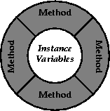
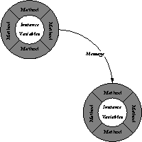
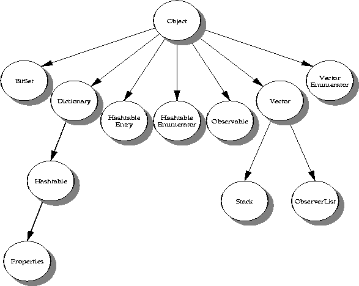
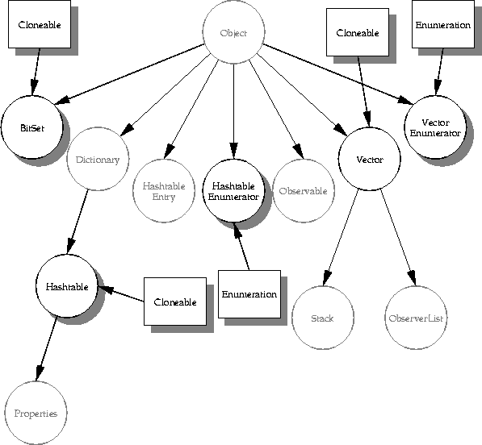

| CONTENTS | PREV | NEXT | The Java Language Environment |

An object's behavior is defined by its methods. Methods manipulate the instance variables to create new state; an object's methods can also create new objects.
The small picture to the left is a commonly used graphical representation of an object. The diagram illustrates the conceptual structure of a software object--it's kind of like a cell, with an outer membrane that's its interface to the world, and an inner nucleus that's protected by the outer membrane.
An object's instance variables (data) are packaged, or encapsulated, within the object. The instance variables are surrounded by the object's methods. With certain well-defined exceptions, the object's methods are the only means by which other objects can access or alter its instance variables. In Java, classes can declare their instance variables to be public, in which cases the instance variables are globally accessible to other objects. Declarations of accessibility are covered later in Access Specifiers. Later on you will also find a discussion on class variables and class methods.
A class is a software construct that defines the data (state) and methods (behavior) of the specific concrete objects that are subsequently constructed from that class. In Java terminology, a class is built out of members, which are either fields or methods. Fields are the data for the class. Methods are the sequences of statements that operate on the data. Fields are normally specific to an object--that is, every object constructed from the class definition will have its own copy of the field. Such fields are known as instance variables. Similarly, methods are also normally declared to operate on the instance variables of the class, and are thus known as instance methods.A class in and of itself is not an object. A class is like a blueprint that defines how an object will look and behave when the object is created or instantiated from the specification declared by the class. You obtain concrete objects by instantiating a previously defined class. You can instantiate many objects from one class definition, just as you can construct many houses all the same1 from a single architect's drawing. Here's the basic declaration of a very simple class called Point
class Point extends Object {
public double x; /* instance variable */
public double y; /* instance variable */
}As mentioned, this declaration merely defines a template from which real objects can be instantiated, as described next.
Having declared the size and shape of the Point class above, any other object can now create a Point object--an instance of the Point class--with a fragment of code like this:
Point myPoint; // declares a variable to refer to a Point object
myPoint = new Point(); // allocates an instance of a Point object
Now, you can access the variables of this Point object by referring to the names of the variables, qualified with the name of the object:
myPoint.x = 10.0;
myPoint.y = 25.7;
This referencing scheme, similar to a C structure reference, works because the instance variables of Point were declared public in the class declaration. Had the instance variables not been declared public, objects outside of the package within which Point was declared could not access its instance variables in this direct manner. The Point class declaration would then need to provide accessor methods to set and get its variables. This topic is discussed in a little more detail after this discussion on constructors.
When you declare a class in Java, you can declare optional constructors that perform initialization when you instantiate objects from that class. You can also declare an optional finalizer, discussed later. Let's go back to our Point class from before:
class Point extends Object {
public double x; /* instance variable */
public double y; /* instance variable */
Point() { /* constructor to initialize to default zero value */
x = 0.0;
y = 0.0;
}
/* constructor to initialize to specific value */
Point(double x, double y) {
this.x = x; /* set instance variables to passed parameters */
this.y = y;
}
}Methods with the same name as the class as in the code fragment are called constructors. When you create (instantiate) an object of the Point class, the constructor method is invoked to perform any initialization that's needed--in this case, to set the instance variables to an initial state.This example is a variation on the Point class from before. Now, when you wish to create and initialize Point objects, you can get them initialized to their default values, or you can initialize them to specific values:
Point lowerLeft;
Point upperRight;
lowerLeft = new Point(); /* initialize to default zero value */
upperRight = new Point(100.0, 200.0); /* initialize to non- zero */
The specific constructor that's used when creating a new Point object is determined from the type and number of parameters in the new invocation.
The this Variable
What's the this variable in the examples above? this refers to the object you're "in" right now. In other words, this refers to the receiving object. You use this to clarify which variable you're referring to. In the two-parameter Point method, this.x means the x instance variable of this object, rather than the x parameter to the Point method.In the example above, the constructors are simply conveniences for the Point class. Situations arise, however, where constructors are necessary, especially in cases where the object being instantiated must itself instantiate other objects. Let's illustrate one of those situations by declaring a Rectangle class that uses two Point objects to define its bounds:
class Rectangle extends Object {
private Point lowerLeft;
private Point upperRight;
Rectangle() {
lowerLeft = new Point();
upperRight = new Point();
}
. . .
instance methods appear in here
. . .
}In this example, the Rectangle constructor is vitally necessary to ensure that the two Point objects are instantiated at the time a Rectangle object is instantiated, otherwise, the Rectangle object would subsequently try to reference points that have not yet been allocated, and would fail.

If an object wants another object to do some work on its behalf, then in the parlance of object-oriented programming, the first object sends a message to the second object. In response, the second object selects the appropriate method to invoke. Java method invocations look similar to functions in C and C++.
Using the message passing paradigms of object-oriented programming, you can build entire networks and webs of objects that pass messages between them to change state. This programming technique is one of the best ways to create models and simulations of complex real-world systems. Let's redefine the declaration of the Point class from above such that its instance variables are private, and supply it with accessor methods to access those variables.
class Point extends Object {
private double x; /* instance variable */
private double y; /* instance variable */
Point() { /* constructor to initialize to zero */
x = 0.0;
y = 0.0;
}
/* constructor to initialize to specific value */
Point(double x, double y) {
this.x = x;
this.y = y;
}
public void setX(double x) { /* accessor method */
this.x = x;
}
public void setY(double y) { /* accessor method */
this.y = y;
}
public double getX() { /* accessor method */
return x;
}
public double getY() { /* accessor method */
return y;
}
}These method declarations provide the flavor of how the Point class provides access to its variables from the outside world. Another object that wants to manipulate the instance variables of Point objects must now do so via the accessor methods:
Point myPoint; // declares a variable to refer to a Point object
myPoint = new Point(); // allocates an instance of a Point object
myPoint.setX(10.0); // sets the x variable via the accessor method
myPoint.setY(25.7);
Making instance variables public or private is a design tradeoff the designer makes when declaring the classes. By making instance variables public, you expose details of the class implementation, thereby providing higher efficiency and conciseness of expression at the possible expense of hindering future maintenance efforts. By hiding details of the internal implementation of a class, you have the potential to change the implementation of the class in the future without breaking any code that uses that class.
You can also declare an optional finalizer that will perform necessary teardown actions when the garbage collector is about to free an object. This code fragment illustrates a finalize method in a class.
/**
* Close the stream when garbage is collected.
*/
protected void finalize() {
try {
file.close();
} catch (Exception e) {
}
}
This finalize method will be invoked when the object is about to be garbage collected, which means that the object must shut itself down in an orderly fashion. In the particular code fragment above, the finalize method merely closes an I/O file stream that was used by the object, to ensure that the file descriptor for the stream is closed.
Subclasses are the mechanism by which new and enhanced objects can be defined in terms of existing objects. One example: a zebra is a horse with stripes. If you wish to create a zebra object, you notice that a zebra is kind of like a horse, only with stripes. In object-oriented terms, you'd create a new class called Zebra, which is a subclass of the Horse class. In Java language terms, you'd do something like this:
class Zebra extends Horse {
Your new instance variables and new methods go here
}The definition of Horse, wherever it is, would define all the methods to describe the behavior of a horse: eat, neigh, trot, gallop, buck, and so on. The only method you need to override is the method for drawing the hide. You gain the benefit of already written code that does all the work--you don't have to re-invent the wheel, or in this case, the hoof. The extends keyword tells the Java compiler that Zebra is a subclass of Horse. Zebra is said to be a derived class--it's derived from Horse, which is called a superclass.Here's an example of making a subclass, which is a variant of our Point class from previous examples to create a new three-dimensional point called ThreePoint:
class Point extends Object {
protected double x; /* instance variable */
protected double y; /* instance variable */
Point() { /* constructor to initialize to zero */
x = 0.0;
y = 0.0;
}
} class ThreePoint extends Point {
protected double z; /* the z coordinate of the point */
ThreePoint() { /* default constructor */
x = 0.0; /* initialize the coordinates */
y = 0.0;
z = 0.0;
}
ThreePoint(double x, double y, double z) {/* specific constructor */
this.x = x; /* initialize the coordinates */
this.y = y;
this.z = z;
}
}Notice that ThreePoint adds a new instance variable for the z coordinate of the point. The x and y instance variables are inherited from the original Point class, so there's no need to declare them in ThreePoint. However, notice we had to make Point's instance variables protected instead of private as in the previous examples. Had we left Point's instance variables private, even its subclasses would be unable to access them, and the compilation would fail.Subclasses enable you to use existing code that's already been developed and, much more important, tested, for a more generic case. You override the parts of the class you need for your specific behavior. Thus, subclasses gain you reuse of existing code--you save on design, development, and testing. The Java run-time system provides several libraries of utility functions that are tested and are also thread safe.
All classes in Java ultimately inherit from Object. Object is the most general of all the classes. New classes that you declare add functionality to their superclasses. The further down the class hierarchy you go--that is, the further you get from Object --the more specialized your classes become.
Single Inheritance and the Class Hierarchy
Java implements what is known as a single-inheritance model. A new class can subclass (extend, in Java terminology) only one other class. Ultimately, all classes eventually inherit from the Object class, forming a tree structure with Object as its root. This picture illustrates the class hierarchy of the classes in the Java utility package, java.util.The HashTable class is a subclass of Dictionary, which in turn is a subclass of Object. Dictionary inherits all of Object's variables and methods (behavior), then adds new variables and behavior of its own. Similarly, HashTable inherits all of Object's variables and behavior, plus all of Dictionary's variables and behavior, and goes on to add its own variables and behavior.
Then the Properties class subclasses HashTable in turn, inheriting all the variables and behavior of its class hierarchy. In a similar manner, Stack and ObserverList are subclasses of Vector, which in turn is a subclass of Object. The power of the object-oriented methodology is apparent--none of the subclasses needed to re-implement the basic functionality of their superclasses, but needed only add their own specialized behavior.

However, the above diagram points out the minor weakness with the single-inheritance model. Notice that there are two different kinds of enumerator classes in the picture, both of which inherit from Object. An enumerator class
implements behavior that iterates through a collection, obtaining the elements of that collection one by one. The enumerator classes define behavior that both HashTable and Vector find useful. Other, as yet undefined collection classes, such as list or queue, may also need the behavior of the enumeration classes. Unfortunately, they can inherit from only one superclass.
A possible method to solve this problem would be to enhance some superclass in the hierarchy to add such useful behavior when it becomes apparent that many subclasses could use the behavior. Such an approach would lead to chaos and bloat. If every time some common useful behavior were required for all subsequent subclasses, a class such as Object would be undergoing constant modification, would grow to enormous size and complexity, and the specification of its behavior would be constantly changing. Such a "solution" is untenable. The elegant and workable solution to the problem is provided via Java interfaces, the subject of the next topic.
Interfaces were introduced to Java to enhance Java's single-inheritance model. The designers of Java decided that multiple inheritance created too many problems for programmers and compiler writers, and decided that a single inheritance model was better overall. Some of the problems described in the previous discussion on the single-inheritance model are solved in a more elegant fashion by the use of interfaces.An interface in the Java language is simply a specification of methods that an object declares it implements. An interface does not include instance variables or implementation code--only declarations of constants and methods. The concept of an interface in the Java language was borrowed from the Objective-C concept of a protocol.
Whereas a class can inherit from only one superclass, a class can implement as many interfaces as it chooses to. Using the examples from the previous discussion, the HashTableEnumerator and VectorEnumerator classes both implement an Enumeration interface that's specific to the characteristics of the HashTable and Vector classes. When you define a new collection class--a Queue class, for instance--you'll also probably define a QueueEnumerator class that implements the Enumeration interface.
The concept of the interface is powerful--classes that implement a given interface need do so only at the appropriate level in the class hierarchy. This picture illustrates the use of interfaces.

In this illustration, interfaces are represented by rectangles. You see that the Cloneable interface is implemented by multiple classes. In addition, the HashtableEnumerator and the VectorEnumerator classes both implement the Enumeration interface. Any given class can implement as many interfaces as it wants to, and in any way that it wants to. Details of the actual implementation of the interface are hidden within the class definition, and should be replaceable without affecting the outside view of the interface in any way. Recall, however, that an interface merely declares methods; it does not
implement them. When inheriting from classes (in languages such as C++), the implementation of inherited classes is also inherited, so more code can be reused when compared to the amount of code re-use in multiply-inherited interfaces. For this reason, inheriting from interfaces provides a reasonable alternative to multiple inheritance, but this practice should not be seen as a substitute for the more powerful but often confusing practice of inheriting from multiple classes.
When you declare a new class in Java, you can indicate the level of access permitted to its members--that is, its instance variables and methods. Java provides four levels of access. Three of the levels must be explicitly specified: public, protected, and private. Members declared public are available to any other class anywhere. Members declared protected are accessible only to subclasses of that class, and nowhere else. Members declared private are accessible only from within the class in which they're declared--they're not available even to their subclasses.The fourth access level doesn't have a name--it's often called "friendly" and is the access level you obtain if you don't specify otherwise. The "friendly" access level indicates that the class's members are accessible to all objects within the same package, but inaccessible to objects outside the package. Packages, a useful tool for grouping together related collections of classes and interfaces, are discussed below.
Java packages are collections of classes and interfaces that are related to each other in some useful way. Such classes need to be able to access each other's instance variables and methods directly. A geometry package consisting of Point and Rectangle classes, for instance, might well be easier and cleaner to implement--as well as more efficient--if the Point's instance variables were directly available to the Rectangle class. Outside of the geometry package, however, the details of implementations are hidden from the rest of the world, giving you the freedom to changed implementation details without worrying you'll break code that uses those classes. Packages are created by storing the source files for the classes and interfaces of each package in a separate directory in the file system.The primary benefit of packages is the ability to organize many class definitions into a single unit. For example, all the Java I/O system code is collected into a single package called java.io. The secondary benefit from the programmer's viewpoint is that the "friendly" instance variables and methods are available to all classes within the same package, but not to classes defined outside the package.
Java follows conventions from other object-oriented languages in providing class methods and class variables. Normally, variables you declare in a class definition are instance variables--there is one of those variables in every separate object created (instantiated) from the class. A class variable, on the other hand, is local to the class itself--there's only a single copy of the variable and it's shared by every object you instantiate from the class.To declare class variables and class methods in Java programs, you declare them static. This short code fragment illustrates the declaration of class variables:
class Rectangle extends Object {
static final int version = 2;
static final int revision = 0;
} The Rectangle class declares two static variables to define the version and revision level of this class. Now, every instance of Rectangle you create from this class will share these same variables. Notice they're also defined as final because you want them to be constants.Class methods are common to an entire class. When would you use class methods? Usually, when you have behavior that's common to every object of a class. For example, suppose you have a Window class. A useful item of information you can ask the class is the current number of currently open windows. This information is shared by every instance of Window and it is only available through knowledge obtained from other instances of Window. For these reasons, it is necessary to have just one class method to return the number of open windows.
In general, class methods can operate only on class variables. Class methods can't access instance variables, nor can they invoke instance methods. Like class variables, you declare class methods by defining them as static.
We say, "in general", because you could pass an object reference to a class method, and the class method could then operate on the object's public instance variables, and invoke the object's instance methods via the reference. However, you're usually better off doing only class-like operations at the class level, and doing object-like operations at the object level.
Abstract methods are a powerful construct in the object-oriented paradigm. To understand abstract methods, we look at the notion of an abstract superclass. An abstract superclass is a class in which you declare methods that aren't actually implemented by that class--they only provide place-holders that subsequent subclasses must override and supply their actual implementation.This all sounds wonderfully, well, abstract, so why would you need an abstract superclass? Let's look at a concrete example, no pun intended. Let's suppose you're going to a restaurant for dinner, and you decide that tonight you want to eat fish. Well, fish is somewhat abstract--you generally wouldn't just order fish; the waiter is highly likely to ask you what specific kind of fish you want. When you actually get to the restaurant, you will find out what kind of fish they have, and order a specific fish, say, sturgeon, or salmon, or opakapaka.
In the world of objects, an abstract class is like generic fish--the abstract class defines generic state and generic behavior, but you'll never see a real live implementation of an abstract class. What you will see is a concrete subclass of the abstract class, just as opakapaka is a specific (concrete) kind of fish.
Suppose you are creating a drawing application. The initial cut of your application can draw rectangles, lines, circles, polygons, and so on. Furthermore, you have a series of operations you can perform on the shapes--move, reshape, rotate, fill color, and so on. You could make each of these graphic shapes a separate class--you'd have a Rectangle class, a Line class, and so on. Each class needs instance variables to define its position, size, color, rotation and so on, which in turn dictates methods to set and get at those variables.
At this point, you realize you can collect all the instance variables into a single abstract superclass called Graphical, and implement most of the methods to manipulate the variables in that abstract superclass. The skeleton of your abstract superclass might look something like this:
abstract class Graphical extends Object {
protected Point lowerLeft; // lower left of bounding box
protected Point upperRight; // upper right of bounding box
. . .
more instance variables
. . .
public void setPosition(Point ll, Point ur) {
lowerLeft = ll;
upperRight = ur;
}
abstract void drawMyself(); // abstract method
}
}Now, you can't instantiate the Graphical class, because it's declared abstract. You can only instantiate a subclass of it. You would implement the Rectangle class or the Circle class as a subclass of Graphical. Within Rectangle, you'd provide a concrete implementation of the drawMySelf method that draws a rectangle, because the definition of drawMySelf must by necessity be unique to each shape inherited from the Graphical class. Let's see a small fragment of the Rectangle class declaration, where its drawMySelf method operates in a somewhat PostScript'y fashion:
abstract class Rectangle extends Graphical {
void drawMySelf() { // really does the drawing
moveTo(lowerLeft.x, lowerLeft.y);
lineTo(upperRight.x, lowerLeft.y);
lineTo(upperRight.x, upperRight.y)
lineTo(lowerLeft.x, upperRight.y);
. . .
and so on and so on
. . .
}
}Notice, however, that in the declaration of the Graphical class, the setPosition method was declared as a regular (public void) method. All methods that can be implemented by the abstract superclass can be declared there and their implementations defined at that time. Then, every class that inherits from the abstract superclass will also inherit those methods.You can continue in this way adding new shapes that are subclasses of Graphical, and most of the time, all you ever need to implement is the methods that are unique to the specific shape. You gain the benefit of re-using all the code that was defined inside the abstract superclass.